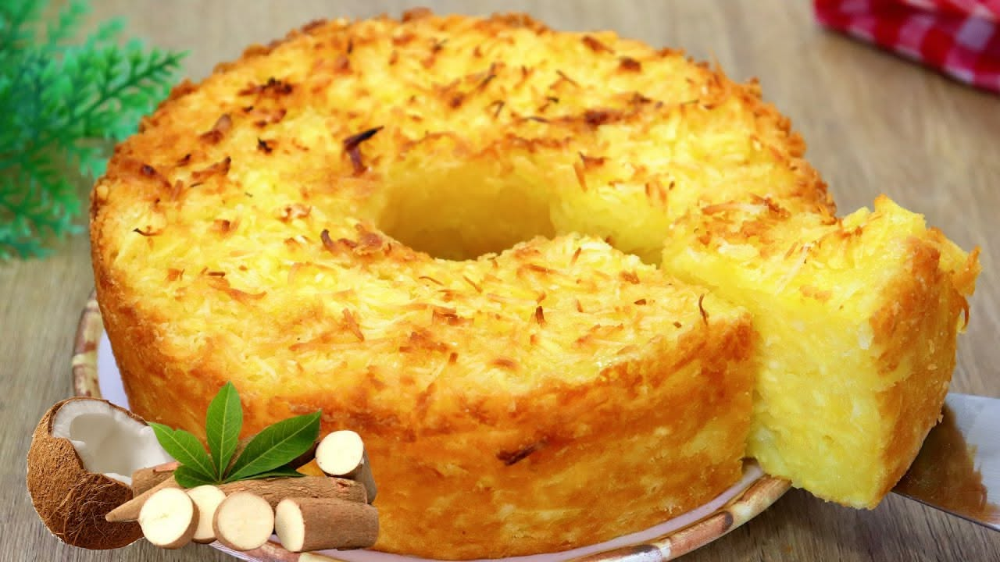

Doces · Tortas e bolos
Bolo de mandioca

Ingredientes
- 2¼ xícaras de mandioca ralada fina
- 2¼ xícaras de queijo-de-minas meia cura ralado fino
- 2¼ xícaras de açúcar
- 1¼ xícara de leite
- 1 colher (café) de canela em pó
- 1 colher (café) de cravo em pó
- 8 ovos ligeiramente batidos
- Manteiga para untar
- Canela e açúcar para polvilhar
Modo de preparo
- Preaqueça forno médio (180 °C). Misture mandioca, queijo, açúcar, leite, canela e cravo.
- Junte os ovos e misture bem. Despeje em assadeira 24 × 34 cm untada.
- Asse ~45 min até dourar. Polvilhe com canela e açúcar. Esfrie, corte em quadrados e congele.
Observação
Congelamento: quadrados em assadeira cobertos com plástico, depois saco sem ar. Descongelamento: ~1 h.